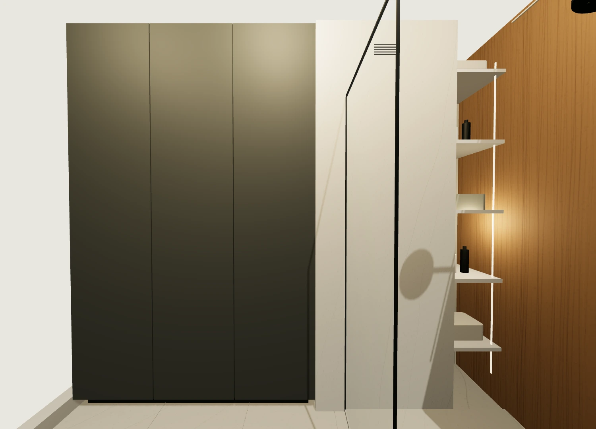

Шкаф 1670 × 503 мм, включая фасад. На исходной картинке было 700 мм; глубину уменьшили по вашей правке. Шахта сохранена.
САНУЗЕЛ У ВХОДА · РЕДАКЦИЯ 03
Одно место.
Три характера.
Камень и дуб, тёплый травертин или олива с орехом. Сравните отделку на одной планировке — с полками справа от шахты и душем на правой стене.
Выбрать дизайн ↗2,97 × 2,28м · до собственных обмеров
3 дизайна7 ракурсов каждого

ВЫБИРАЕМ АТМОСФЕРУ
Три способа собрать интерьер
Выбор меняет отделку в 3D,
крупных видах и развёртках.
Душевая система установлена на правой стене по плану. Ниша находится в дальнем правом углу, сбоку от шахты.
В нише 354 × 503 мм — пять полок и вертикальная подсветка. Есть отдельный крупный ракурс.
РАССТАНОВКА И ДЕТАЛИ
Посмотрите со своей стороны
Вращайте модель и меняйте свет.
Кнопки возвращают к заданным ракурсам.
Загружаем модель…
Общий вид со срезом ближних стен
КРУПНЫЕ ВИДЫ
Разобрать по деталям
Откройте любой вид в 3D.
Изображения соответствуют выбранной отделке.
АЛЬБОМ ЧЕРТЕЖЕЙ
Расстановка, свет, электрика
План расстановки
КВАРТИРА / САНУЗЕЛЭСКИЗ · 16.09.2026ЛИСТ 02
ОБОЗНАЧЕНИЯ И ПРИВЯЗКИ
Все размеры в мм. Высоты от чистого пола. Размеры соседей — временная основа; отделка уменьшит чистые размеры ниши.
ПАЛИТРА ВЫБРАННОГО ДИЗАЙНА
Камень и дуб
Цвета и фактуры — ориентиры для подбора.
Образцы материалов проверяем вместе.
| Элемент | Предложение | Что уточняем |
|---|---|---|
| Подвесная тумба | 850 × 500 мм; два ящика, накладная чаша | Сифон, чаша и высота смесителя |
| Шкаф | 1670 × 503 мм; три секции, фасад вровень с шахтой | Полезная глубина и наполнение; крупную технику пока не закладываем |
| Полки | Ниша 354 × 503 мм; пять полок, подсветка сбоку | Чистый размер после отделки, влагостойкий материал |
| Душевой экран | Прозрачное стекло, панель 800 мм | Крепления, проход и защита от брызг |
| Зеркало | Ø 800 мм; центр h 1630 мм | Высота под рост пользователей |
| Свет | 3000 K; общий, зеркало, ниша и ночной | Яркость и исполнение по зоне |
ОСНОВА ДЛЯ ОБСУЖДЕНИЯ
План один.
Отделку выбираем.
Образцы ваших ДП 06‑21 и ДП 10‑22 использованы для палитры, мебели и подачи чертежей. Мокрые точки и шахта сохранены. Дверь открывается наружу по вашей картинке.
Новые изображения получены из той же 3D-модели, что открывается на странице. Глубина шкафа 503 мм — изменение по вашей правке, а не размер с исходной схемы. Все размеры ещё предстоит подтвердить обмером.
Свет и электрика — предварительные предложения. Перед монтажом нужны выбранное оборудование, проверка зон душа и защиты электриком, а также уточнение существующего вентиляционного канала.